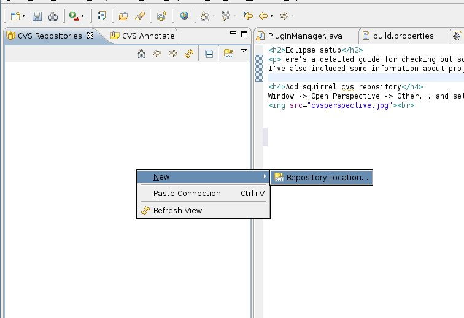
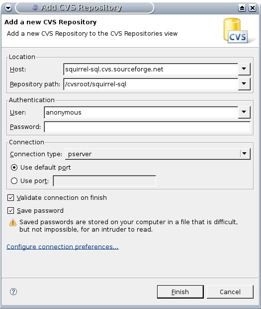
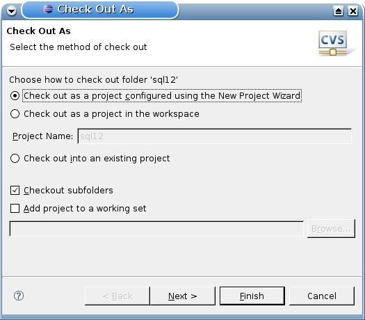
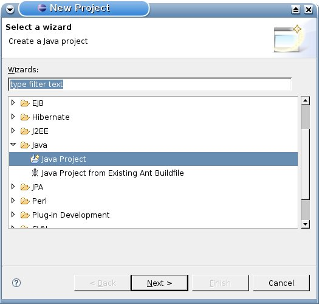
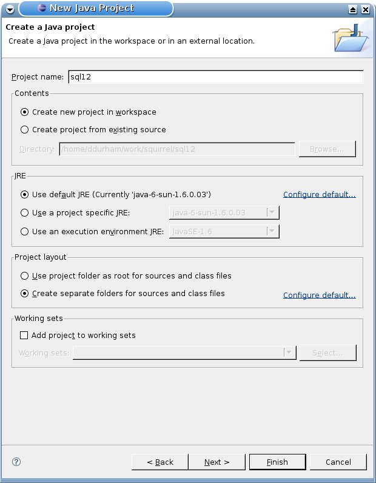
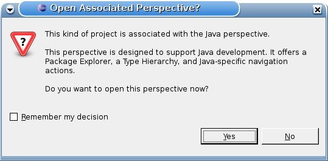
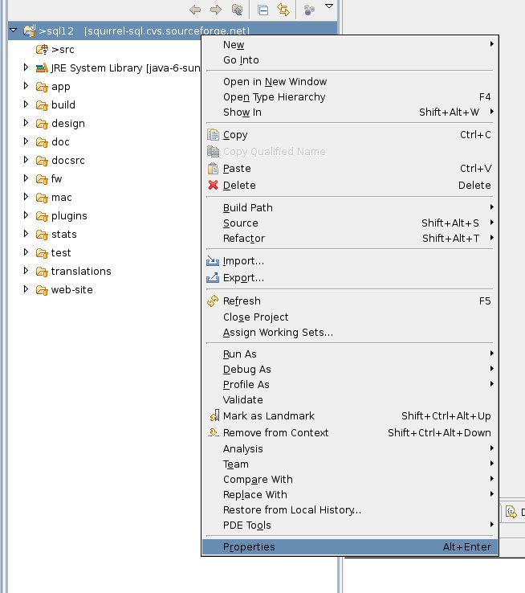
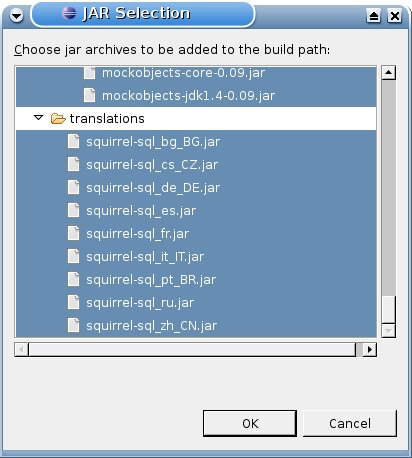
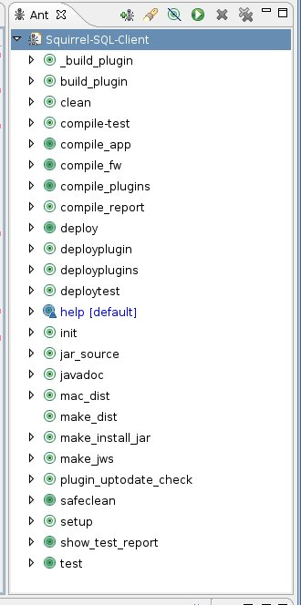

Eclipse setup
Here's a detailed guide to checking out squirrel from SVN and building from within eclipse.
I've also included some information about project settings that aren't explicitly required.
You might consider creating a "squirrel" workspace.
Add squirrel svn repository
- Go to Window -> Open Perspective -> Other... and select SVN Perspective

- Then add a new repository

- Enter the following information:
- host
- squirrel-sql.cvs.sourceforge.net
-
- repository path
- /cvsroot/squirrel-sql
- user
- anonymous
- password
- -- leave blank --
- connection type
- pserver
- save password
- -- check this box --

Check out project
- Navigate to the sql12 directory, right click and selct "check out project as ..."

- Then select "Checkout project using the New Project wizard."

- Select check out as a java project

- Enter a project name and click finish

- Change to the java perspective by clicking yes when this dialog appears.

- You'll then see this window, which will take awhile to complete depending on your connection speed.

Setting project properties
- Open the project properties dialog

- Add the src directories from areas of the project you intend to work with.
(It's recommended that you add all of them, including the test/src directory to avoid classpath problems.)

- Add the jar files from various directories (there are a lot, so this part may take some patience, or
it can be skipped if you don't mind compiler errors in your java editor view)

- Click OK and you'll see this in the bottom right corner.

Running the application
Navigate to app/src/net.sourceforge.squirrel_sql.client, right click Main.java and select "run as java application."

Building with ant
- Add the ant build file by opening the ant view from Window -> Show View -> Ant, then adding a build/build.xml
as a build file. There's an ant icon with + next to it that can be used to add build files. At this point you'll
see something like this:

- Execute the "make_dist" target to create distribution.
- You can run the "test" target, but this requires running make_dist first.